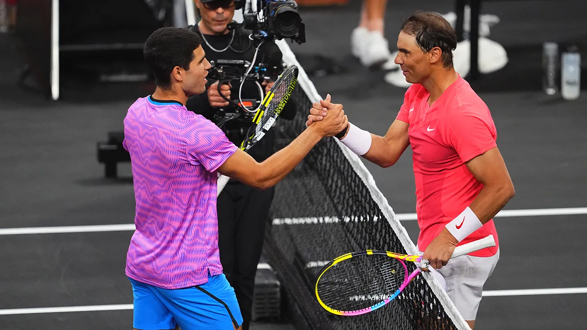
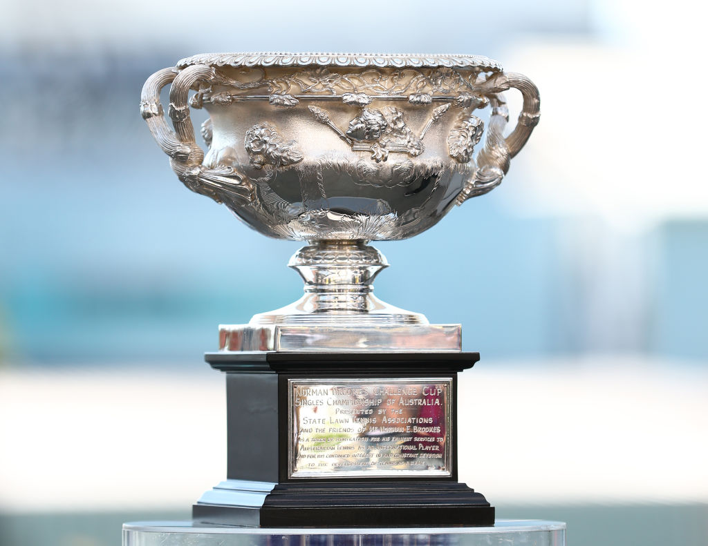

¿Quieres enterarte lo que ocurre en el mundo del tenis?
En esta pagina web podrás conocer las últimas noticias del tenis, los mejores jugadores de la historia, los trofeos más imporntate, el ranking actual ATP...
Noticias más destacadas del tenis masculino
Top 10 mejores tenistas de la historia
1. Novak Djokovic

2. Rafa Nadal
3. Roger Federer
4. Pete Sampras
5. Bjorn Borg
6. Ivan Lendl
7. Jimmy Connors
8. Andre Agassi
9.John McEnroe
1o. Mats Wilander
Les mostramos ese ranking histórico de tenistas con el número de Grand Slams conseguidos en su historia
Títulos más importantes en el tenis
